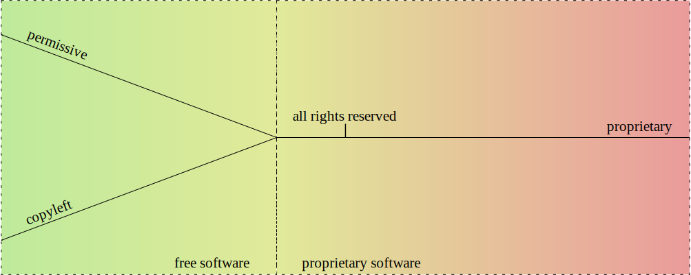
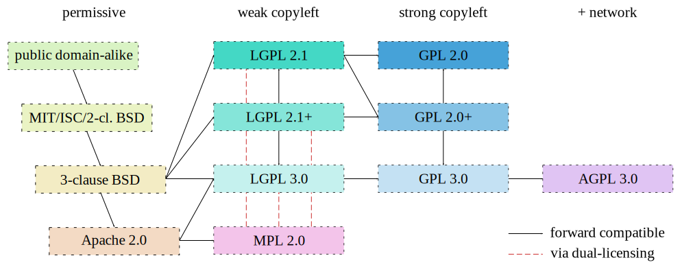

Warning
This article is still a work-in-progress. The subject matter is a very tough one, and mistakes are possible. I have been focusing on verifying what I know based on the U.S. copyright law. Everything still needs to be verified for other jurisdictions, and proofread by someone with more experience and knowledge.
Contents
I am not a lawyer. The information presented here is based on various (hopefully trustworthy) sources. While I have put my best effort to keep this correct, it is entirely possible that some of it may be incorrect, outdated or simply do not apply in a specific jurisdiction. Use at your own risk, and if in doubt, consult a lawyer.
The purpose of this guide is to provide a single source of copyright information that could be helpful to people like me — software developers and packagers. Unlike many other guides that can be found online, this one does not focus on a single jurisdiction. Instead, I have chosen to attempt to provide a broader view that is important to international projects like Gentoo, whose authors and users can be spread all across the world.
I have deliberately decided to focus on the wording of the laws and the spirit of licenses. I do realize that in many cases it is doubtful whether something is actually enforceable. Nevertheless, I do not believe we should be encouraging violating copyright just because we are unlikely to be (successfully) sued.
This guide should be by no means considered complete or final. I plan to update it as I find or receive new information. If you find a mistake, an outdated information or simply think something should be extended, please do not hesitate to contact me.
The purpose of copyright law is to protect creative work. It is important to understand that copyright covers only work that was actually created and recorded, and to the scope of its actual text, implementation, representation. It does not cover ideas or concepts. 1
To explain this better, let's suppose you came up with a great program called Frobnicate. Once you start writing the code, it becomes protected by copyright. This means that if somebody copied your code without permission, that would constitute a copyright violation. However, the copyright law does not prohibit others from independently writing an equivalent program, as long as that person does not actually copy your code.
Of course, once somebody starts to reimplement something, and especially if the number of possible implementations is limited, we get into muddy waters. How do you prove that something was reimplemented independently and not just copied and modified? Some projects are using a technique called clean room design to achieve that. The work is then done by two disjoint teams. One team has access to the original implementation, and uses it to write a textual specification of how it works without including any potentially copyrighted material. The other team writes code from the specification without actually looking at the original program. 2
There is no such a thing as a global copyright law. Every country has its own laws, and cross-country agreements are made to cover protection of work abroad. Nevertheless, there are some global standards set by international conventions, most notably the Berne Convention. 3
Copyright applies to creative work from the moment of its recording. While at least some countries provide a means of registering copyright, the registration is not necessary for it to apply. It is important to understand that copyright applies even if the author does not include a copyright notice or the work is published pseudonymously.
Besides copyright law, I would like to shortly discuss two other laws that could be of relevance when dealing with intellectual property: patents and trademarks. Both are outside the scope of this guide but they can nevertheless impact the developer's work.
Patent law focuses on protecting new and creative inventions. Unlike copyright law, it does not focus on the actual implementation but on the idea itself. You could say that it complements copyright. While the latter can prevent others from copying (plagiarising) your work, patents can prevent others from reimplementing the same idea. 4
Patent law does not apply to inventions automatically. Instead, one has to explicitly apply for one, and do it separately for every jurisdiction where the patent is meant to apply. Patents are meant to be granted only for new and original inventions.
The exact range of patentable ideas differ from country to country. For our purposes, the most important part are software patents. They are often considered harmful by the open source community, preventing development of free alternatives to proprietary software. For example, MPEG Layer III (mp3) encoding software was affected by patents until their expiration in 2017. At the moment of writing, patents on computer software are permitted e.g. in United States but not in the European Union. 5
One particularly gruesome aspect of the patent law are so-called patent trolls. These are entities that focus on obtaining and using patents that they do not intent on creatively using them in their own products but only to enforce them on other companies. 6
One interesting example of this is the Eolas patent. The company has patented what used to be known as browser plugins (e.g. the Flash plugin). This patent has affected all major browser vendors, including authors of open-source web browsers, resulting in a large number of lawsuits and a few creative mitigations. 7
Trademark law focuses on protecting product brands. The idea is that if you market your product under a specific brand, others can not use the same (or confusingly similar) brand for their products in the same area of business. The goal is twofold: on one hand to prevent your competitors from taking advantage of your reputation, and on the other to prevent them from damaging it through their product.
Trademarks generally start being protected automatically once they become recognizable enough. However, they can also be registered to grant them stronger protection. It is a common practice to mark unregistered trademarks via the ™ symbol, and registered via the ® symbol.
Trademarks are important to open source projects as well as businesses. The Gentoo name and logo are registered trademarks in order to protect them from being used to create another Linux distribution with the same name and creating confusion as to which is which.
In order to understand some of the further concepts in this article, it is necessary to introduce two important terms: original work and derivative work.
Original work means a new creative work that has been created independently of any other existing work. Notably, this means that the author(s) (or other copyright holders) hold the sole copyright to this work.
Derivative work is a work that is derived from existing work(s), either original or derivative. In a derivative work, new copyright applies only to the original work of its author. However, the copyrights of its underlying works still apply to the respective parts of the work.
In some cases, the derivative work will merely be a compilation of existing data, without any new original data. However, if the task of combining the data carries the notion of creativity, then the new copyright of derivative work will apply to this creative compilation. Otherwise, the derivative work will not carry any new value, it will not be copyrightable beyond its original parts.
It is important to note that the author of derivative work must be permitted to incorporate the underlying works in it. Otherwise, the derivative work may constitute copyright infringement and the original part of it may not be covered be copyright protection. 8
Let's say you've written some entirely new function in a programming language. Provided enough creativity, the code of this function constitutes an original work. Now, if someone updates the code of this function, the resulting function is a derivative work of your function, and adds the copyright of the person modifying it. A source code unit is a derivative work of all the code inside it. A compiled object file is a derivative work of the source code (and possibly of the act of compiling, if it is not purely mechanical), an executable is a derivative of object files (and the act of linking), a package is a derivative of all the files within it (and the act of packaging). This example shows how individual copyrights on program parts build up the copyright of the whole program.
Not everything is covered by copyright. The work that is not copyrighted is generally called to be in public domain. The exact rules to what constitutes public domain vary from country to country but I will attempt to cover a few common groups.
Firstly, copyright does not protect works that do not constitute enough originality. Everyday sentences, drawings, titles, slogans are clearly not copyrightable. The exact line between what is copyrightable and what is not can be very thin and depend on interpretation. Some argue that e.g. configuration files or plain data files (including e.g. systemd units) are not copyrightable.
Secondly, public domain includes works that the copyright has expired for. The exact rules for expiration vary across the globe, and may depend on the category of works, time of publication, whether it was published pseudonymously. The copyright length is counted either from author's death or from publication date. Wikipedia includes a compiled list (and a map) of copyright lengths in different countries. 9
It is important to emphasize two facts here: that in international projects such as Gentoo it is important to account for the longest possible copyright length, and that copyright expiration does not extend to derivative works. While we can safely assume that Homer's Iliad is not copyrighted in original, its modern translation is covered by the translator's copyright.
Thirdly, specific works can be excluded from being covered by copyright by the applicable law. For example, the works of the United States government are normally not protected by copyright in the US. 10
Fourthly, there are cases of authors voluntarily withdrawing their exclusive rights and publishing their works as public domain. This concept is arguable under some jurisdictions, and I will discuss this problem in greater detail in the section on licenses.
The works in public domain can be freely used, reproduced, modified, etc. without limitations. They can also be used to create derivative works. However, the derivative works of public domain materials may be protected by copyright if they include original content of their author.
More information on the copyrigh in the United States can be found in circulars issued by the U.S. Copyright Office.
In the most broad sense, license explains the rights and restrictions granted by the copyright owner. Some copyright holders use custom license texts, while others resort to well-known public licenses. License notices range from one-sentence right grants, through varied length licenses to End User License Agreements written in the form of a legal contract.
For our purposes, let's split licenses into a few groups, roughly presented in the following diagram.
At the central point of the diagram, all rights reserved is found. It represents the default rights granted by the copyright law, i.e. the case when no specific license is provided. From there, we can either go in the direction of more restrictive proprietary licenses, or less restrictive licenses. The former route has no further features, so let's focus on the latter.
If we go in the way of less restrictive licenses, we eventually leave the area of proprietary software and find ourselves in free software licenses. These are the licenses that grant us the elementary freedoms that I will explain shortly.
At this point, the path forks and we have two options. If we turn left, we go into copyleft licenses that not only grant users freedoms but also require derivative works to preserve these freedoms. If we turn right, we go into permissive licenses that do not have the aforementioned restriction.
I will now explain all the license groups in detail.
This is a term historically used in copyright notices. While today it is no longer necessary to use it, it is sometimes used as an indication that the package is copyrighted and the copyright holder does not grant you any additional rights beyond these implied by the copyright law (and did not add any additional restrictions).
The exact extent of laws granted depends on the jurisdiction and the type of work. In general, you can use (run, read, view) any work that you have obtained lawfully (e.g. by buying it or fetching from an official website). Usually, you can also modify it for your private use.
You are not allowed to redistribute the program or make derivative works from it. Even if the program is freely redistributed via a website, it is exclusive copyright owner's right to do that. This is especially problematic for packaging because if the original source disappears (upstream removes old version, stops distributing the software, goes bankrupt), it becomes no longer possible to install the package on new systems.
Free software is software that respects the user's freedom. The GNU project explains it through four essential freedoms:
The freedom to run the program as you wish, for any purpose (freedom 0).
The freedom to study how the program works, and change it so it does your computing as you wish (freedom 1). Access to the source code is a precondition for this.
The freedom to redistribute copies so you can help others (freedom 2).
The freedom to distribute copies of your modified versions to others (freedom 3). By doing this you can give the whole community a chance to benefit from your changes. Access to the source code is a precondition for this. 11
Essentially, software that grants these freedoms without limitations is called free software.
It is essential to note that this is not about cost. It is entirely valid to sell free software — as long as the buyer obtains the license to modify and redistribute it (possibly for free!)
Proprietary software is software that is not free software. This includes the all-rights-reserved software, as well as less restrictive licenses (as long as they don't grant all four freedoms) and more restrictive licenses.
One particular case of proprietary license is a free distribution license that permits redistributing the original packages. This makes it possible to mirror sources and continue using the package once upstream stops providing the download. However, these licenses do not provide all four freedoms.
Common limitations of proprietary licenses are:
restricting the right to use for commercial purposes,
adding so-called do-no-harm clauses that limit usage (even if this seems superficial or unharmful),
restricting commercial redistribution,
restricting redistribution of modified copies.
A special case of proprietary licenses are End User License Agreements. These are written in contract form, and require explicit agreement to their terms before installing (or using) the software.
Permissive licenses is the term used to distinguish free software licenses that are not copyleft. They are permissive in the sense that they permit the relevant code (or more generally work) to be reused in non-free derivative works.
In other words, if you take, say, a BSD-licensed code snippet and include it in your program, you can afterwards make it proprietary and choose not to release the source code, as long as you include an appropriate copyright notice. You can also freely modify the code without having to share your modifications.
This feature makes permissive licenses preferable to commercial companies working with open source. They make it possible to easily reuse open source projects in their commercial code, or to create commercial versions parallel to open source projects.
A major advantage of a few common permissive licenses is that they are trivial, and therefore easy to understand for a regular programmer. These include the BSD licenses (2-clause BSD and 3-clause BSD being the most common), MIT, ISC and so on. These licenses focus on granting you the necessary freedoms, with minimum requirements that generally boil down to attribution.
Another common permissive license is Apache 2.0. This one's a big longer and more complex but it has the additional feature of granting you patent license for all the contributed code.
For non-software works, a common example of permissive licenses are Creative Commons Attribution licenses (CC BY 4.0).
As explained above, public domain means works that are not covered by copyright. In this section, I would like to focus on authors expressly dedicating their work to public domain. This means that you can use the software in any way with no restrictions, and notably without the need to attribute the original author.
However, in some jurisdictions (particularly in the EU) the copyright law does not permit waiving all the rights granted by copyright. Arguably, this might make public domain dedications void. For this reason, it is recommended to use a public domain-alike license instead. An example of such a license is Creative Commons Zero (CC0) license that explicitly waives as many rights as possible within the applicable law. 12
Another similar license is called Unlicense. It takes a mixed approach of dedicating the software into public domain first, and adding a fallback license for jurisdictions where the former is not recognized.
Copyleft licenses are free software licenses that not only grant freedoms but also require them to be preserved in (some kinds of) derivative works. The copyleft can either be weak or strong. A weak copyleft requires any modifications to the code in question to be released under matching license. A strong copyleft requires anything using the code in question to use such a license.
Let's take an example. You have written a library implementing some algorithm, and I am writing a proprietary program using this library. Now let's suppose that I found a way to optimize the algorithm to perform twice as fast. Now, if you used a permissive license then I could keep the improved algorithm proprietary, and sell my product as faster than my competition. However, if you used a weak copyleft license then I would have to publish my changes, and you could merge them back making the competition as fast as my program.
At least that's the theory. In reality, I might as well decide to contribute back to permissively licensed project. Or I might have ignored the copylefted project and implemented the algorithm myself to avoid having to contribute back.
Strong copyleft goes even further. Let's suppose I found a creative use of your library and want to implement a program. If the library is not covered by strong copyleft, I am permitted to create a proprietary program and make money from the creative use of your algorithm. However, if you used strong copyleft, I would have to publish my program as free software as well.
Let's cover a few basic examples of copyleft software licenses.
Mozilla Public License 2.0 (MPL 2.0) is a weak copyleft license. It is limited to file scope. This means that if a file includes MPL 2-licensed code, the whole file must be released under this license, including your modifications to the code (if any). However, the rest of your project can use any license, including proprietary licenses. 13
GNU Lesser General Public License (LGPL 3.0) is weak copyleft as well. It is limited to library scope. If you wish to use a LGPL-licensed library, then you must redistribute the library under the same (or stronger) license, along with your potential modifications. Furthermore, if you choose to link the library statically, the license requires you to provide the user with a means of relinking your program with a different version of the library. The official GNU FAQ indicates that this does not require releasing the source code, and instead it is sufficient to provide the rest of your program in compiled object form.
GNU General Public License (GPL 3.0) is a strong copyleft license. It extends to the whole executable, including dynamically linked libraries. If you wish to use a static or shared GPL library in your program, your program must be redistributed as GPL as well.
GNU Affero GPL (AGPL 3.0) updates the previous license to suit network-oriented world better. Plain GPL serves it purpose only for software that is actually meant to be redistributed. If you build proprietary software that runs on web servers, you normally do not distribute program sources and binaries. AGPL accounts for this. If your network application is using any AGPL code or libraries, the application itself needs to use AGPL too and you are required to permit users interacting with your application to download its code. 14
The primary reason for using copyleft licenses is to prevent improved versions of free software becoming proprietary. On one hand, this is important to users who might have invested their effort and money to the particular piece of software and do not wish to discover that the free software version has been discontinued in favor of something proprietary. On the other hand, this is important to software developers who do not wish their software to be forked and turned into proprietary competition.
There is some controversy over GPL licenses. It is argued that dynamic linking to a library may not be sufficient to call a program its derivative work, and therefore enforce GPL on it. Furthermore, it is possible to use a thin (L)GPL wrapper with linking exception to workaround GPL limitations, as nVidia proprietary drivers do (to link proprietary code to a GPL kernel). 15
Grsecurity is one example where GPL failed. The project's sources are licensed GPL-2 because they're built on the Linux kernel. However, the company is charging for access (which is acceptable per the GPL) and punishing the users for redistributing the sources (which is the users' right according to GPL) by terminating the access to updates. Bruce Perens indicated that this additional term is in violation of the GPL. However, to the best of my information this has not been actually tested in court. 16
Another major controversy has been caused by Oracle's switch of Berkeley DB license to dual-licensing between commercial license and AGPL. This meant that all applications linking (even indirectly) to Berkeley DB now not only have to use AGPL but also all network-oriented apps are required to publish their sources under AGPL. Many users felt that this change was made purely to trick unknowing users into purchasing the commercial license. 17
Weak copyleft for software:
Strong copyleft for software:
Documentation:
GNU Free Documentation License: FDL 1.3
Creative Commons Attribution-ShareAlike CC BY-SA 4.0
Other works:
Creative Commons Attribution-ShareAlike CC BY-SA 4.0
Software:
BSD: 2-clause BSD, 3-clause BSD
Documentation & other works:
Creative Commons Attribution CC BY 4.0
A comprehensive list of licenses with comments, including information on GPL compatibility and Free Software status can be found on GNU project's Various Licenses and Comments about Them page.
A list of licenses approved as Open Source along with their texts can be found on Open Source Initiative's Licenses & Standards page.
Simple explanations of terms of various licenses can be found on the TLDRLegal site.
A tabular comparison of various licenses can be found on Wikipedia's Comparison of free and open-source software licences.
Sites that focus on helping to choose a license include OSS Watch Licence Differentiator and GitHub's Choose a License.
Let's say you're starting a new project and want to consciously choose a license that fits you. Let's assume that you're not bound to use any specific dependency yet, and there are no preconditions limiting your choice.
For a start, ask yourself the following three questions:
Do I want to protect my work from becoming a proprietary product?
Do I want to be attributed whenever my work is used?
Do I want to keep rights to my work at all?
If you answered ‘yes’ to the first question, then you're looking for a copyleft license. If you answered ‘no’ to the first question but ‘yes’ to at least one of the two remaining questions, permissive license would work for you. Finally, if you answered ‘no’ to all of them, then a public domain-alike license would work for you.
Whichever option you choose, there's an additional question to ask: do you want to ensure that yourself and your users are granted any patent rights that might affect your code?
If you choose a copyleft license, then there are a few options.
If you only want your own code to remain free but do not mind using it within non-free software, then MPL 2.0 or LGPL 3.0 would work for you. The main difference between these two is that LGPL additional requires that the proprietary software permits your users to easily replace your code with another version (e.g. by swapping a shared library or relinking the program).
If you want to entirely prohibit building non-free software on top of your code, then you're looking for a strong copyleft license. For software that is traditionally distributed and run on user systems, GPL 3.0 is your choice. For webapps and server software that can interact with users without being installed on their systems, AGPL 3.0 is better.
MPL and third versions of GNU licenses all include patent grant and retaliation clauses. Older versions of GNU licenses do not.
A common practice for using GNU licenses is to permit your users to follow the terms of newer versions of the same license as well. If you choose do that, you must explicitly note so, e.g. in copyright notices.
If you choose a permissive license, then there's a whole lot to choose from. A recommended license with patent grants is Apache 2.0. If you don't want patent grants, a few popular options are MIT, ISC, 2-clause BSD, 3-clause BSD.
Finally, if you choose a public domain-alike license, then common options are CC0 and Unlicense. These licenses do not include patent clauses.
Normally, copyright to a specific work belongs to its author. An exception to this are works made for hire. If the work is done by an employee within the scope of employment, the copyright belongs to the employer.
Initially, the copyright to your project will be solely yours. However, as it becomes more popular and more people start contributing patches, various parts of it will hold many different copyrights. For large projects such as Gentoo, it is entirely normal to have thousands of copyright holders.
Once the copyright is split between many entities, some of your exclusive rights are limited. This can in particular affect relicensing but also e.g. issuing commercial licenses. However, it should be noted here that copyright ownership is entirely independent to the governance of the project.
It is entirely normal that the original author may continue leading the project even if other people now hold copyright to most of the code. Of course, many projects actually do switch to a more community-oriented governance model. The project members generally can't take over a project based on their copyright but they are within their right to fork the project if they're unhappy with its governance.
Some projects recommend or require copyright transfers from their contributors. If you sign a copyright transfer, then the subject of the transfer obtains copyright to the work in question. This practice makes it possible to keep all (or most of) copyright to a project developed by a large number of contributors in single hands.
The modern copyright law does not require works to carry prominent copyright notices anymore. Nevertheless, it is a good idea to do so. Firstly, it makes it clear who holds copyright to the work (or parts of it), when the copyright was applied (and therefore when it does expire) and what rights are granted to your users. Secondly, if it ever comes to pursue copyright violations, lack of copyright notices can be used to claim ‘innocent infringement’.
A typical copyright notice appears on top of the source file, and consists of the word ‘copyright’ and/or the copyright sign ©, followed by applicable years, followed by copyright owner. It is followed by an indication of license. Some licenses (in particular the GNU licenses) provide an explicit recommendation on how the copyright notice should look like.
Ideally, projects keep track of all people who contributed non-trivial changes. The copyright notices are added for all copyright owners, along with the dates of the first and their most recent contributions. This makes it easy for anyone interested to determine the copyright status of every file and to contact the copyright owners if necessary.
In some cases, tracking exact copyright ownership is considered infeasible, and simplified copyright notices are used. The Gentoo copyright policy considers it sufficient to list the main copyright holder, and use a single date span for all listed contributors. Furthermore, it provides even simpler form of using ‘Gentoo Authors’ along with a VCS or an AUTHORS file. 18
To repeat: copyright notices are not required by law and there are no formal requirements of how they need to look like. Nevertheless, including a detailed copyright notices is doing your users (and possibly yourself, in the future) a service.
While for small projects it is generally acceptable to accept contributions without any further ado, large projects often find themselves in need of stronger legal assurances.
A Contributor License Agreement is a contract between the project and the contributor. The exact extend of different CLAs differ but in general they contain either a copyright assignment or copyright grant, a patent grant, and a confirmation that the contributor has the legal rights to grant all of that.
The CLA needs to be signed before the project in question accepts any contributions. In the act of signing, the contributor is generally required to provide some personal data and contact information. Some therefore consider CLAs to be invading contributor's privacy. 19
The Fiduciary License Agreement (FLA) is a specific variant of CLA that is recommended to be used in Free Software. FLA includes a copyright assignment clause but it also prevents the new copyright owner from making the software proprietary, at least within the extent of third party contributions.
An alternative to CLAs is the Developer Certificate of Origin (DCO). It does not include copyright transfer, and instead assumes that all copyright will be held by contributors. It merely confirms that the contributor has the right to submit it under project's license. DCO is generally signed by adding a Signed-off-by note to the commit message. Therefore, unlike CLAs the signed certifications are part of the repository rather than kept separately.
License compatibility is an utility concept to establish if two licenses can be combined to create a new work. License compatibility is often unidirectional, i.e. work under license X can become part of a larger work under license Y but not the other way around.
Generally, an output license is compatible with the input license if it does not grant user any additional rights over the rights over the input license, and does not remove any restrictions the input license had. While this may seem complex, it is pretty obvious if you look at it this way: you can't grant your users any rights that the original author did not grant them.
In some cases, licenses themselves provide upgrade clauses. These explicitly permit the user to use some other license for the work in question. For example, LGPL 3.0 permits upgrading to GPL 3.0, and GPL 3.0 permits upgrading to AGPL 3.0.
David A. Wheeler has prepared a neat ‘license slide’ explaining how commonly used licensed can be combined. I have created a license compatibility graph based on it, making it in SVG and updating for MPL 2.0.
This graph is not a replacement for studying license terms but it can give a quick answer whether having license X on input, we can get license Y on output. If you can find a path from the input license to the output license, then the answer is yes. If you have two licenses on input, the one further alongside the path is your output license.
Public domain-alike licenses are our starting point. Since they grant user all the rights (or remove copyright entirely), the output can be any other license.
They are followed by MIT/ISC/2-clause BSD group. They all are roughly the same, giving the user all freedoms but requiring attribution. The work using these licenses can be used with all the licenses following them.
The next position is the 3-clause BSD license. It adds a clause prohibiting using the author's name to promote derived work. All the remaining licenses can integrate 3-clause BSD code.
The last permissive license on the list is Apache 2.0 license. It adds significantly more clauses. It accepts everything listed before on input but on output it's limited to LGPL 3.0 (i.e. no older), MPL 2.0 and their successors on the list.
The second column includes weak copyleft licenses. In the middle there's LGPL-2.1+ that allows using LGPL 2.1 or LGPL 3.0. All three of these options can use 3-clause BSD code and the third version can also use Apache 2.0 code. LGPL licenses include an upgrade clause that permit using the same or newer GPL license on output (i.e. LGPL 2.1 permits GPL 2.0 or GPL 3.0, LGPL 3.0 permits GPL 3.0).
The weak copyleft column also includes MPL 2.0 license. It accepts all permissive licenses on input. The compatibility with GPL licenses is handled specially by the license. It permits using other copyleft licenses (LGPL, GPL…) on output as long as the MPL-ed source files remain available under the original license. If they're modified, the file needs to become dual-licensed.
The third column covers strong copyleft licenses. Again, in the middle there's GPL-2.0+ that permits using GPL 2.0 or GPL 3.0. Each version permits using code using a matching or older LGPL major version, and through it all permissive licenses.
The fourth column is dedicated to AGPL 3.0, the strong copyleft license with network restrictions. It has only one version, and it accepts GPL 3.0 on input (and through it all the weaker licenses). No other license is acceptable on output. 20 21
Let's take a few examples now. Let's say that you have a MIT-licensed project and you'd like to add some ISC code in. That's fine since both licenses are roughly equivalent, the result can either be MIT or ISC. Now let's say you want to add Apache 2.0 to the mix. This is fine since there's a path from both of them to Apache 2.0, and the result becomes Apache 2.0.
Now you'd like to add GPL 2.0 code to Apache 2.0 — but you can't do that because there's no path that could be reached from both these licenses. However, if it was GPL 2.0+, then you could use GPL 3.0 that is the first license that can be reached both from Apache 2.0 and from GPL 2.0+.
Dual-licensing (or more generally, multi-licensing) means releasing the software under two or more different licenses. The users can choose the license that suits them better in given circumstances.
In Free Software, dual-licensing is sometimes used to achieve better license compatibility. For example, Rust and many Rust packages are dual-licensed using MIT and Apache 2.0 licenses. This is because Apache license provides patent protection but it is not GPL-compatible. Users needing GPL compatibility can rely on MIT license instead. 22
Dual-licensing is often used to combine copyleft and commercial licensing. Users are permitted to use a particular project as Free Software but if they need to use it in proprietary application they can buy a commercial license instead.
A specific kind of multi-licensing is to permit use of newer versions of the same license. For example, when using the GNU licenses it is common to let user choose to use a newer version of the same license (e.g. GPL version 2 or later).
Relicensing means changing the license that the project is released under. Usually relicensing is done from a particular version of the project forward. In some cases, it is also possible to apply a new license to older versions. However, in both cases it should be noted that the code already released under the previous terms will remain available under that terms, i.e. it is not possible to retroactively ban the old license.
Relicensing going forward is always possible if license compatibility permits it. For example, a project using MIT license can be relicensed into 2-clause BSD at any point. Commits prior to this point will be always both under the old license (which already permitted upgrade to 2-clause BSD for users) and the new license. However, commits after the relicense will no longer be available under the MIT license. Someone deciding to fork the project and continue releasing it as MIT will not be able to backport changes from the new versions.
If the new license is incompatible with the old one, relicensing is only possible if all copyright holders agree to it. If you're the sole author or all copyright has been transferred to you, that's no problem. However, in a typical community project relicensing involves getting permission from a lot of people, some of whom might be really hard to reach (or even have passed away). In practice, it is probably sufficient to get the approval from the major contributors (i.e. people holding copyright on significant portions of code). Nevertheless, it is a major undertaking and not one to be taken lightly.
A possible interim arrangement is dual-licensing under the old and new licenses. The idea is that while old code remains under the old license, the new code is dual-licensed for the old and the new licenses. While this does not resolve the problem immediately, it avoids accumulating more problematic code and makes it possible to proceed with relicensing in the future, once either all necessary relicensing agreements are collected or the non-covered code is removed from the project. This approach was taken by the LLVM project in order to switch to a derivative of Apache 2.0 license. 23
It is rather unlikely (and undesirable) for your project to be based entirely on original code. Instead, you will at the very least link it to some libraries. In some cases, you may need to incorporate some existing code directly into sources.
How to do it without violating copyright? The answer depends on a few factors, most notably the license of incorporated work, the license of your program and the method of incorporating it.
Public domain (and public domain-alike) code is very easy to incorporate. In both cases, you are granted all the rights to modify and redistribute the code, with no limitations or prerequisites, not even to attribute the original author. You can simply copy the code into your program and forget that you've ever done so. Of course, it is probably worthwhile to include some attribution note, at least so that you know where the code came from.
Permissive licenses are also quite friendly. If you wish to link dynamically to a permissively licensed library, there's no problem. If you wish to bundle this shared library along with your program, you generally need to include its license and attribution but no more than that. However, if you want to link it statically into your program or copy code from it, then things become a little more complex.
Firstly, you need to verify the license compatibility. If your license is less restrictive than the included code, you will need to release the whole program under the more restrictive license. However, you are free to keep the original license for your parts of the source code and just indicate that the combined executable is licensed differently.
Secondly, you must pay attention to specific license terms, in particular attribute the authors of the work you've used in the way specified by them. In some cases, it is sufficient to preserve original copyright notices when copying code. Other licenses require including appropriate copyright information along with binary packages (e.g. in README) or displaying them inside the program (e.g. in the ‘about’ dialog).
Permissive licenses are compatible with creating proprietary software too (since you don't grant more rights than the original). As long as you follow the requirements on attribution, you can include permissively licensed code in your proprietary products. You can also modify it as you see fit without having to disclose your modifications.
Copyleft licenses are not that friendly.
Weak copyleft licenses permit both dynamic and static linking to any software. However, if you link to a modified version of a library, you are required to disclose your modifications and release them under a compatible license. LGPL additionally requires you to provide users with means to easily replace the library you linked with a different version.
Including copyleft code directly in your program is more demanding. The same rules apply to dynamic and static linking of strong copyleft libraries. License compatibility requires that your whole program is released under a compatible license, and copyleft licenses are not compatible with proprietary licenses, so you effectively can't introduce GPL-ed code in proprietary software.
License incompatibility can also be a problem in free software. MPL 2.0, a pretty recent license accounts for that explicitly by permitting dual-licensing of a larger work. In some cases (e.g. integrating GPL-2.0 into GPL-3.0 project), your only option will be to try relicensing your project.
When building software packages for the distribution, two kinds of licenses apply: licenses for files installed by the package, and license for files used to build it. The first one is especially important to users who are going to install the software (possibly from a binary package) and use it, the second one for users who are going to build it.
In Gentoo, the ebuild's LICENSE variable covers only the former. It serves three important purposes:
It integrates with package manager's ACCEPT_LICENSE mechanism to let users decide what licenses and license groups are acceptable for them, and prevent them from inadvertently installing proprietary packages. It is also used to cover the explicit need for EULA approval.
It provides programmers helpful tips on what licenses are used by packages. This can be used e.g. to initially select libraries to use in your package.
It integrates with Quality Assurance tooling. It historically helped us find missing redistribution restrictions or license violations.
Technically, every file installed by the package could have a different license. To cover for that, we would have to keep complete file list and license indication for every file on this list. However, Gentoo's design makes it really hard to even come up with complete list of files potentially installed by the package, with all the possible conditions. Instead, we use a single variable that is supposed to contain a union of all licenses of the installed files.
For example, if package frobnicate installs LGPL-ed libfrobnicate and GPL-ed program frobnicate, you would specify LGPL-3+ GPL-3+. This means that some of the files have LGPL-3+ license, and some have GPL-3+. If tools were installed conditionally to a USE flag, then GPL-3+ in the list would also become conditional.
The point is that you should at least mentally look at the list of installed files, and establish the license of every one of them (see: determining the license). Then deduplicate the resulting list and copy it into the ebuild.
The latter kind, licenses used purely at build time are not recorded in ebuild metadata. Nevertheless, they can affect redistribution restrictions or even prevent some users from building the package. If the latter is the case (e.g. use of build scripts is forbidden under some circumstances), the package must not be included in Gentoo.
The license of every output file is generally derived from the license of its inputs, including source files and possibly linked libraries (in case of strong copyleft). In determining the licenses of source files, it is recommended to consult the following:
Copyright notices inside files themselves.
Accompanying documentation, including README files.
COPYING and LICENSE files inside the package.
Copyright notices provide the most precise information on licensing. They explicitly define the scope (i.e. file or part of file), as well as precisely define the license. For example, the GPL notices generally indicate whether newer versions of GPL are acceptable.
Documentation may also provide more precise information through being free form, and therefore permitting the developer to explain the licensing situation in detail. Of course, not every developer does that, so copyright notices are better.
Finally, if no other information is available, it is reasonable to assume that the COPYING or LICENSE file included in the package implies its license.
Please note that in some cases the licensing information may be incomplete or contradictory. If in doubt, please ask upstream for confirmation. If you have reasons to suspect that the package is violating a license, please do not include it until you clear things with upstream.
When combining different files into a single executable there is some degree to which licenses can be ‘subsumed’ per license compatibility. For example, if you have a GPL-3+ executable that includes MIT-licensed code in one of the source files, you can reasonably assume that upstream is correct in calling the package GPL-3+.
There could be also cases when upstream licenses the combined executable differently from all source files. For example, when linking to a GPL-2+ shared library, the upstream may decide to keep all its own sources under permissive licenses but must license the final executable as one of the compatible GPL variants.
When packaging software, it is important to look at the redistribution rights granted to you by the license. While free software grants you all of them (by definition), proprietary licenses may not.
Firstly, you need to check whether the license grants free right to redistribute the original upstream archives. This will be usually the right to redistribute in source form, unless you are dealing with prebuilt upstream binaries.
In Gentoo, all source archives are automatically mirrored to increase reliability and offload upstream sites. If you are not permitted to redistribute unmodified upstream archives, you need to disable mirroring explicitly. This is done via RESTRICT=mirror.
If redistributing modified sources is not permitted, this is generally not a problem since we usually use patches to modify them. However, if you ever decide to repackage something or use software that is a modified version of some other software, you should check the license. If redistributing modified sources is not permitted, you must not package that.
Please note that when dealing with packages prohibiting redistribution, it is usually necessary to download them from original/authorized sites. As explained in the all rights reserved section, this may be a precondition for the right to use the software. Using third party mirrors that may have violated the copyright in the first place is a risk for your users.
Secondly, a few upstreams go as far as to prohibit automated downloads of their source packages. However, more often they just block anything that's not an interactive browser session. In Gentoo, if that is the case you need to disable automatic fetching via RESTRICT=fetch.
A special case of this are packages that require accepting the license (EULA) before download. In Gentoo, we generally assume that if the license is in @EULA group and therefore user has to manually approve it to install the package, and if upstream does not explicitly forbid automated downloads, it is fine to fetch it via the package manager.
Thirdly, you need to check whether you are permitted to redistribute binary packages built from the source. Usually, this will be worded as permission to redistribute in binary form, with or without modifications.
If the package prohibits binary redistribution completely, you should indicate that via RESTRICT=bindist. If it prohibits redistribution with modifications, then the problem is harder. Technically you could leave it enabled if you do not apply any modifications but you need to be especially careful to disable bindist once the package is patched. Generally, it is safer to restrict it unconditionally then.
In some packages, the redistribution limitations do not apply unconditionally, especially if they are caused by patents or trademarks rather than the license itself. In these cases, it is customary to add a bindist USE flag, and apply changes necessary to permit binary redistribution when it is enabled (e.g. by disabling problematic features).
U.S. Copyright Office, Circular 1: Copyright Basics (https://www.copyright.gov/circs/circ01.pdf)
Wikipedia: Clean room design (https://en.wikipedia.org/wiki/Clean_room_design)
Summary of the Berne Convention for the Protection of Literary and Artistic Works (1886) (https://www.wipo.int/treaties/en/ip/berne/summary_berne.html)
United States Patent and Trademark Office: General information concerning patents (https://www.uspto.gov/patents-getting-started/general-information-concerning-patents)
fsfe: Software Patents in Europe (https://fsfe.org/activities/swpat/)
Wikipedia: Patent troll (https://en.wikipedia.org/wiki/Patent_troll)
Wikipedia: Eolas → Patents (https://en.wikipedia.org/wiki/Eolas#Patents)
U.S. Copyright Office, Circular 14: Copyright Registration for Derivative Works (https://www.copyright.gov/circs/circ14.pdf)
Wikipedia: List of countries' copyright lengths (https://en.wikipedia.org/wiki/List_of_countries%27_copyright_lengths)
Copyright Law of the United States, Chapter 1, Section 105: Subject matter of copyright: United States Government works (https://www.copyright.gov/title17/92chap1.html#105)
GNU Project: What is free software? (https://www.gnu.org/philosophy/free-sw.html.en)
Creative Commons: CC0 (https://creativecommons.org/share-your-work/public-domain/cc0/)
MPL 2.0 FAQ (https://www.mozilla.org/en-US/MPL/2.0/FAQ/)
GNU Project: Frequently Asked Questions about the GNU Licenses (https://www.gnu.org/licenses/gpl-faq.en.html)
Software Engineering Stack Exchange: How does the GPL static vs. dynamic linking rule apply to interpreted languages? Answer by vartec (https://softwareengineering.stackexchange.com/questions/167773/how-does-the-gpl-static-vs-dynamic-linking-rule-apply-to-interpreted-languages/167781#167781)
Bruce Perens, Warning: Grsecurity: Potential contributory infringement and breach of contract risk for customers (https://perens.com/2017/06/28/warning-grsecurity-potential-contributory-infringement-risk-for-customers/), The Register: Grsecurity maker finally coughs up $300k to foot open-source pioneer Bruce Perens' legal bill in row over GPL (https://www.theregister.com/2020/03/27/grsecurity_bruce_perens_gpl_settlement/)
InfoWorld: Oracle switches Berkeley DB license (https://www.infoworld.com/article/2611450/oracle-switches-berkeley-db-license.html)
GLEP 76: Copyright Policy (https://www.gentoo.org/glep/glep-0076.html)
OSS Watch: Contributor Licence Agreements (http://oss-watch.ac.uk/resources/cla)
David A. Wheeler, The Free-Libre / Open Source Software (FLOSS) License Slide (https://dwheeler.com/essays/floss-license-slide.html)
Eric Steven Raymond, Catherine Olanich Raymond: Licensing HOWTO, version 0.8 DRAFT (http://www.catb.org/~esr/Licensing-HOWTO.html)
The Rust Programming Language: Frequently Asked Questions (https://prev.rust-lang.org/en-US/faq.html#why-a-dual-mit-asl2-license)
LLVM Developer Policy: Relicensing (https://llvm.org/docs/DeveloperPolicy.html#relicensing)